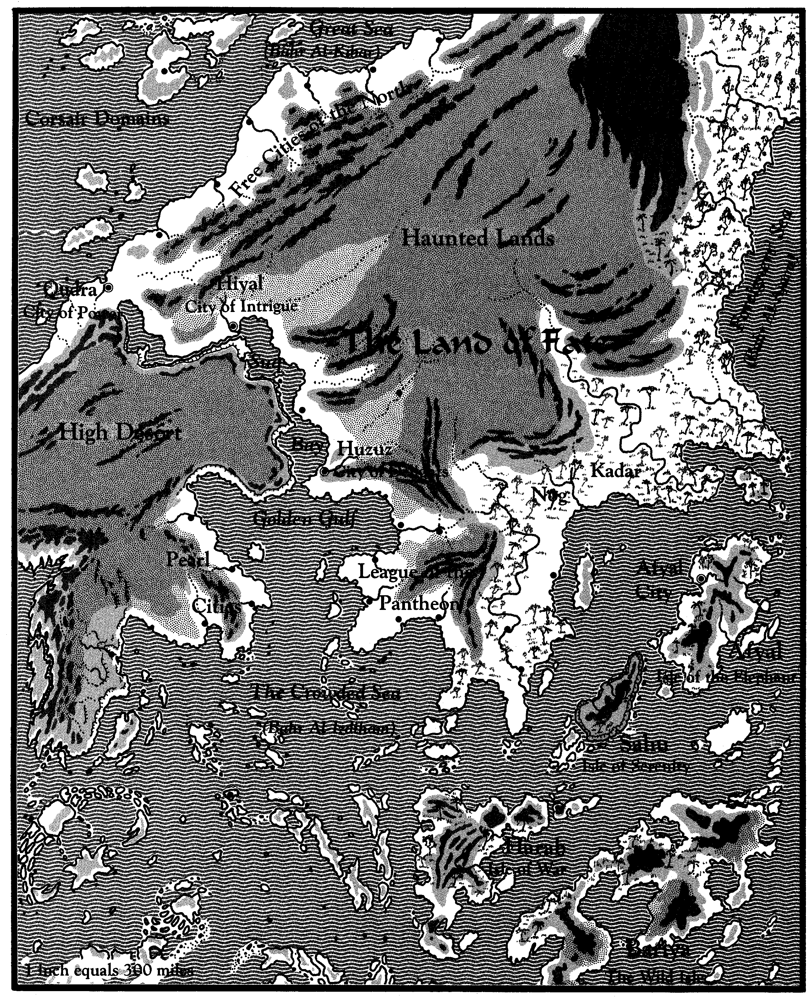

地标
地标
本书随附提供了扎哈拉的全景图。以下是一些值得注意的位置：
胡祖兹，欢乐之城：胡祖兹是帝国的心脏，位于金湾附近，也是东西向和南北向两条主要贸易路线的交汇处。这座城市由世袭的大哈里发统治，拥有扎哈拉最雄伟的宫殿。大多数其他的统治者都向大哈里发效忠（即使不理会大哈里发的也不例外）。予识者之屋，冥想和敬拜之所，位于胡祖兹的中心。
席亚尔，阴谋之城：席亚尔位于更内陆的南北贸易路线上，就像是胡祖兹的反面，一座建立在沼泽中的城市，阴暗而忧郁。在烟雾缭绕的密室里，无数黑暗的契约被签署或是被撕毁。席亚尔的苏丹娜是一个狡猾、诡计多端的女人。
库德拉，力量之城：巨海上的一个主要港口，多年来，库德拉一直保持着严密的城防，以抵御海盗和野蛮人的袭击。现在它是命运之地城防最好的城市，拥有着强大的陆海军。库德拉的埃米尔是一个富有耐心、处事冷静的矮人，由这座城市的马穆鲁克议会所选出。
泛神联盟：泛神联盟是一个城邦国家的联合体，毗邻金湾和密海，泛神论联盟是一个由道德主义牧师掌权的宗教联盟。（道德主义牧师在第3章中有更多描述）这个联盟的成员包容所有承认和崇拜科尔、纳吉姆、哈加纳、塞兰和一个叫贾哈尔的土神的人。敬拜别神的人会被人忌讳或迫害。泛神论者表面承认欢乐之城是予识者和大哈里发的家园，但他们仍然保持着独立于帝国的政府。
沙漠高原：在席亚尔和胡祖兹之间的，是一片高耸的、被风吹拂的高原，点缀着绿洲和季节性河流。扎哈拉的大游牧部落在这里养大他们的牧群，并袭击他们的邻居。
魂萦之地：扎哈拉的第二大沙漠，这个地区曾经拥有强大的战争城邦、诸小国和游牧部落。但所有的文明都在许多世纪前消失了，留下了已经化为废墟的城市。根据传说，以前的一位统治者的傲慢导致了所有政权的垮台。不管真正的原因是什么，人们几乎遗弃了魂萦之地的所有地方。除了郊外，这个地区现在属于神怪和荒野生物。
阿非亚是一个典型的岛国：它有着丰富的、大部分未开发的腹地和繁荣的沿海贸易。它也有一个非常严格的阶级秩序，或者说种姓制度。
